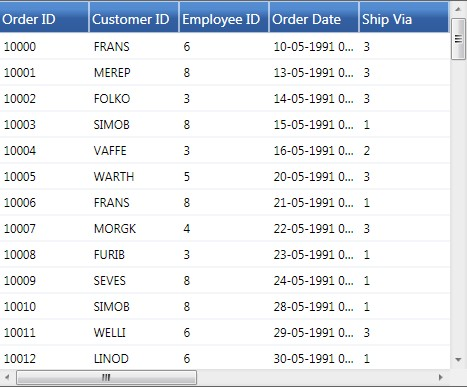
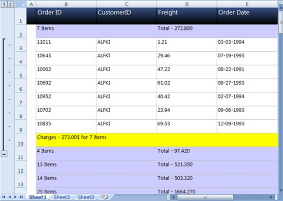

The GridExcelConverter class provides support for exporting data from a GridDataControl to an Excel spreadsheet for verification and/or computation. This control automatically copies the GridDataControl's styles and formats to Excel. The GridExcelConverter control is derived from GridExcelConverterBase. The XlsIO libraries are used to support the conversion of the GridDataControl contents to Excel. The following dll files should be added, along with the default dll files in the reference folder:
· Syncfusion.XlsIO.Base
· Syncfusion.XlsIO.WPF
· Syncfusion.GridConverter.Wpf
Features
· GridDataControl
· Entire Content
· Selected Rows
· GridDataControl with Nested Child
· GridDataControl with Grouping
GridDataControl
Entire Content
You can convert the entire content of a GridDataControl to an Excel Spreadsheet. You can also avail the option for specifying the version of the Excel file using the ExcelVersion enum. The version can be one of the following:
· ExcelVersion.Excel97to2003
· ExcelVersion.Excel2007
The following code illustrates the conversion of GridDataControl contents to an Excel Spreadsheet:
|
[C#]
gridDataControl.ExportToExcel("Sample.xlsx", ExcelVersion.Excel2007 );
(or)
gridDataControl.ExportToExcel("Sample.xls", ExcelVersion.Excel97to2003 ); |

Figure 142: GridDataControl

Figure 143: GridDataControl content in an Excel Spreadsheet
The above images show how the entire content of the GridDataControl is exported to an Excel Spreadsheet.
Selected Rows
You can also avail the choice of converting the selected rows of GridDataControl to an Excel Spreadsheet.
The following code illustrates the conversion of selected rows of GridDataControl to an Excel Spreadsheet:
|
[C#]
grid.ExportToExcel(grid.Model.SelectedRanges.ActiveRange,"sample.xlsx", ExcelVersion.Excel2007); |
GridDataControl with Grouping
You can convert the content of a GridDataControl, with Grouping to an Excel Spreadsheet. The following code illustrates this feature:
|
[C#]
gridDataControl.ExportToExcel("Sample.xlsx", ExcelVersion.Excel2007 );
(or)
gridDataControl.ExportToExcel("Sample.xls", ExcelVersion.Excel97to2003 ); |
 Note: Only the
visible grouping contents will be exported.
Note: Only the
visible grouping contents will be exported.

Figure 144: GridDataControl with Grouping

Figure 145: GridDataControl with Grouping content in an Excel spreadsheet
The above images shows how the GridControl, with Grouping is exported to an Excel Spreadsheet.